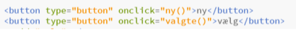
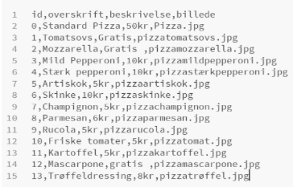

Database forløbet
Tilbage
I vores projekt har vi valgt at lave en hjemmeside hvor man kan bygge sin egen pizza. Ideen går ud på at du starter ud med en basics pizza til 50 kr, hvorefter du kan bygge mere på, ved at vælge forskellige ingredienser. Vi har valgt at opbygge vores hjemmeside ved at tage udgangspunkt i to knapper: "ny" og “vælg”. Ny-knappen giver en mulighed for hele tiden at få en ny ingrediens som kommer i en bestemt rækkefølge. Man bruger så vælg-knappen for at vælge de ingredienser man gerne vil have på sin pizza, og så gemmer den de forskellige ingredienser nedenunder, så man kan få et overblik over ens valg.

Ved at lave vores hjemmeside således har vi gjort det nemt og overskueligt og for brugerne og vores side er derfor meget brugervenligt.
Vi har lavet en database, hvor vi har vores primære nøgle “id”, hvor vi så har ud for hver id en overskrift, beskrivelse og billede af produktet.
